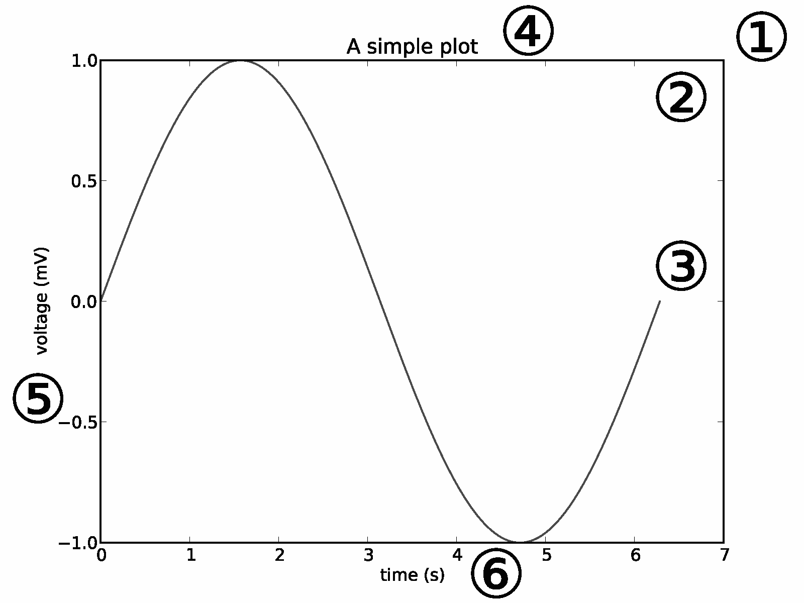
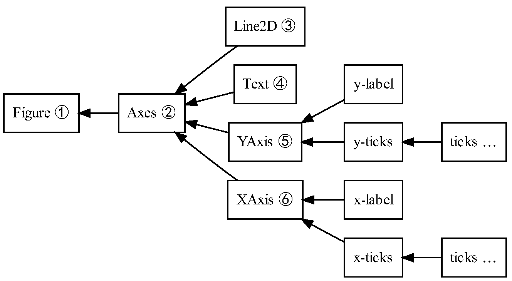
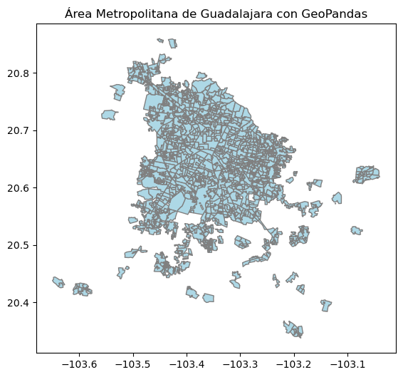
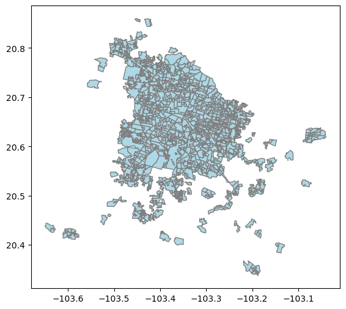

🔹 Sesión 6#
En esta sesión trabajaremos con la visualización de datos espaciales estáticos utilizando Matplotlib y GeoPandas. Aprenderás a crear mapas básicos y a personalizar su apariencia.
Matplotlib y GeoPandas#
Durante el curso ya hemos graficado mapas estáticos utilizando Matplotlib. El uso del método plot() (que proviende de GeoPandas) y algunos otros como Fig, ax = plt.subplots() recordarás haberles visto en sesiones anteriores pero, ¿cómo funcionan realmente?, ¿cómo puedo construir un mapa y personalizarlo de acuerdo con mis necesidades de análisis y comunicación?
Para responder estas preguntas, primero vamos a entender la forma en cómo se construyen los gráficos en Matplotlib.
En Matplotlib, la construcción de gráficos se basa en un sistema de objetos jerárquico. Comprender esta jerarquía es esencial para personalizar y controlar cada componente de una visualización.
Objetos en Matplotlib
Matplotlib organiza los elementos gráficos mediante una arquitectura basada en objetos. Los dos componentes fundamentales de esta estructura son:
Artistas (Artists): Representan los elementos visuales del gráfico, como líneas (
Line2D), texto (Text), marcas de los ejes (Tick) o etiquetas. Cada artista tiene propiedades que pueden personalizarse, como el color, el estilo de línea o la fuente.Ejes (Axes): Son contenedores que agrupan y organizan a los artistas. Cada objeto
Axesdefine un área de graficado con su propio sistema de coordenadas. Dentro de unAxesse encuentran los ejes X y Y, etiquetas, títulos, y los datos graficados.
Estos objetos no son independientes: están organizados en una jerarquía donde los elementos más complejos contienen a otros más simples.

Figura 1. Estructura jerárquica de los objetos en Matplotlib.Imagen tomada del capítulo “Matplotlib” por John D. Hunter, en The Architecture of Open Source Applications, Volume II. Disponible en aosabook.org, bajo licencia CC BY 3.0.

Figura 2. Ejemplo visual de un gráfico generado con Matplotlib, con sus componentes principales identificados según la jerarquía de objetos. Imagen tomada del capítulo “Matplotlib” por John D. Hunter, en The Architecture of Open Source Applications, Volume II. Disponible en aosabook.org, bajo licencia CC BY 3.0.
# Datos de ejemplo
x = np.linspace(0, 2 * np.pi, 100)
y = np.sin(x)
# Crear la figura y los ejes (Figure y Axes)
fig, ax = plt.subplots()
# Añadir una línea (Line2D: un tipo de Artist)
line = ax.plot(x, y, label="Seno")
# Añadir título y etiquetas (Text: también Artists)
ax.set_title("A simple plot")
ax.set_xlabel("Time (s)")
ax.set_ylabel("Voltage (mV)")
# Mostrar los ticks (también son Artists)
ax.set_xticks([0, np.pi, 2*np.pi])
ax.set_xticklabels(["0", "π", "2π"])
# Mostrar leyenda
ax.legend()
# Mostrar gráfico
plt.show()
¿Por qué usamos fig, ax = plt.subplots()?#
Cuando creamos un gráfico con Matplotlib, usamos una estructura jerárquica de objetos. La instrucción:
fig, ax = plt.subplots()
es una forma concisa de inicializar esta jerarquía.
fig: la figura completa (Número 1 en la figura 2)
es el contenedor principal de todo el gráfico.
puede incluir uno o varios objetos
Axes.
ax: el área de graficado (Número 2 en la figura 2)
Representa una región dentro de la figura donde se dibuja el gráfico.
Es el objeto central en la jerarquía pues controla los datos, los ejes, ticks y el texto.
¿Por qué seguimos utilizando ax después?
Una vez que tienes el ax, lo usas para acceder a todos los elementos del gráfico:
ax.plot(x,y)
ax.set_title('...')
ax.set_xlabel('...')
ax.set_ylabel('...')
Cada uno de estos elementos se representa como una rama del objeto Axes, como se muestra en la figura 2, por ejemplo:
Line2D–> curva dibujadaText–> Títulos y etiquetasXAxis|YAxis–> Ejes con etiquetas y ticks
Idea clave
ax es el centro de mando del gráfico. Cualquier cosa visible dentro de la gráfica (líneas, texto, ejes, marcas) está contenida dentro de este objeto.
Conclusión
fig es la hoja en blanco.
ax es el espacio donde pintas
y todo lo demás son pinceladas (líneas, texto, etiquetas) que agregas usando ax.
El método plot() en GeoPandas#
GeoPandas extiende Pandas para trabajar con datos geoespaciales.
Una de sus ventajas es que permite visualizar mapas directamente desde un GeoDataFrame mediante el método .plot(), que se integra perfectamente con Matplotlib.
A diferencia de Matplotlib, donde usamos ax.plot() para graficar datos, en GeoPandas el método plot() ya sabe qué y cómo dibujar, porque el GeoDataFrame contiene tanto los datos como la geometría.
Aquí hay un ejemplo, notemos las diferencias:
import geopandas as gpd
import matplotlib.pyplot as plt
# Cargar datos geoespaciales
amg = gpd.read_file('amg.shp')
# Crear figura y eje como en Matplotlib
fig, ax = plt.subplots(figsize=(10, 6))
# Dibujar el mapa
amg.plot(ax=ax,
color='lightblue',
edgecolor='gray')
# Añadir título con Matplotlib
ax.set_title("Área Metropolitana de Guadalajara con GeoPandas")
GeoDataFrame.plot()es un método especializado que crea visualizaciones basadas en geometrías (puntos, líneas o polígonos).Al pasar
ax=ax, le decimos a GeoPandas dónde dibujar (en qué parte de la figura).Las opciones como
coloryedgecolorse aplican directamente a los polígonos (o al objeto geográfico que estamos graficando).
Acción |
Matplotlib puro |
GeoPandas |
|---|---|---|
Graficar datos |
|
|
Crear figura y ejes |
|
|
Estilo visual |
|
|
¿Quién tiene los datos? |
Tú (arrays |
El |
Combinado plot() de GeoPandas con Matplotlib#
Aunque el método plot() de un GeoDataFrame como amg.plot() se encarga de visulizar los datos geoespaciales, podemos seguir usando Matplotlib para personalizar el gráfico.
Esto nos permite combinar la facilidad de GeoPandas con el control que ofrece Matplotlib.
Por ejemplo, la Figura 3 muestra el resultado del código anterior. Si observamos la última línea del código verás que utilizamos ax.set_title() para añadir un título al gráfico, lo cual es una función de Matplotlib y nos permitió poner el título al gráfico.
Ahora, si observas la Figura 4, verás que hemos quitado el código ax.set_title() y el contenido del sigue igual.

Figura 3. Mapa de la zona metropolitana de Guadalajara con título personalizado.

Figura 4. Mapa de la zona metropolitana de Guadalajara sin título personalizado.
Personalización avanzada#
Hasta ahora, hemos visto que el método .plot() de GeoPandas simplifica mucho la creación de mapas. Sin embargo, cuando queremos controlar con precisión cómo se ve cada parte del gráfico, Matplotlib nos ofrece herramientas más avanzadas.
Una de estas necesidades comunes es personalizar la leyenda de colores generada al graficar columnas numéricas con column="...". GeoPandas crea una barra de colores (colorbar) por defecto si usamos legend=True, pero su posición y formato son limitados.
Usando herramientas de Matplotlib como make_axes_locatable, podemos añadir un eje adicional (como cax) a la figura. Ese eje se usa exclusivamente para dibujar la leyenda de colores, separado del mapa.
Esto nos da un control mucho más preciso sobre el diseño de la visualización.
Resumen
La integración entre GeoPandas y Matplotlib no solo permite visualizar datos geoespaciales fácilmente, sino también mejorar la presentación de forma profesional combinando lo mejor de ambos mundos.
Datos#
Trabajaremos con los datos sobre el índice y el grado de marginación provenientes de la CONAPO, disponibles en el visualizador de datos GEMA.
También trabajaremos con los datos de población indígena en hogares según la autodenominación del pueblo o agrupación lingüística a la que pertenece y que se ubica en localidades no identificadas como asentamientos históricos del pueblo de referencia del Instituto Nacional de los Pueblos Indígenas (INPI), 2020, disponibles en el visualizar de datos GEMA.
Contenidos de esta sesión#
En esta sesión estaremos trabajando con este cuaderno de trabajo:

Ejercicio práctico#
Manos a la obra
i. Entra al portal GEMA.
ii. Explora el porta y descarga un conjunto de datos de tu interés en formato .geojson.
iii. Ojo 🧿, este conjunto de datos debe contar con variables que se puedan clasificar, ya sea cuantitativas o cualitativas.
iv. Genera un mapa estático y preséntalo a la clase 🤓.
Tips 🔥🔥🔥#
Si quieres ahondar en la personalización de gráficos con GeoPandas y Metplotlib, te recomiendo revisar la documentación oficial de GeoPandas, específicamente el capítulo sobre visualización de datos geoespaciales.